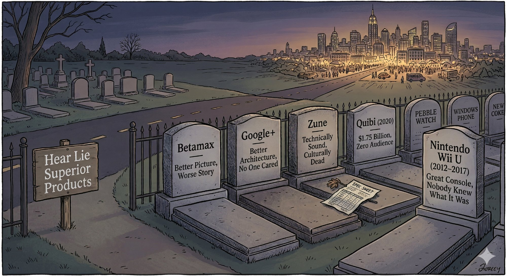
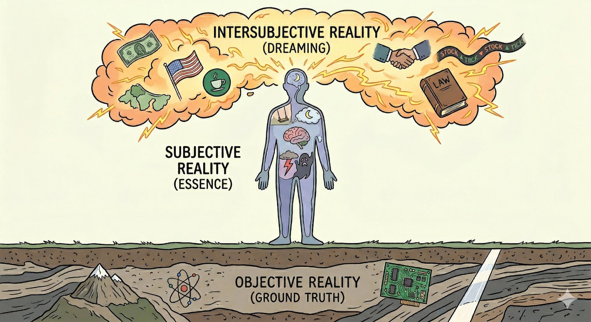
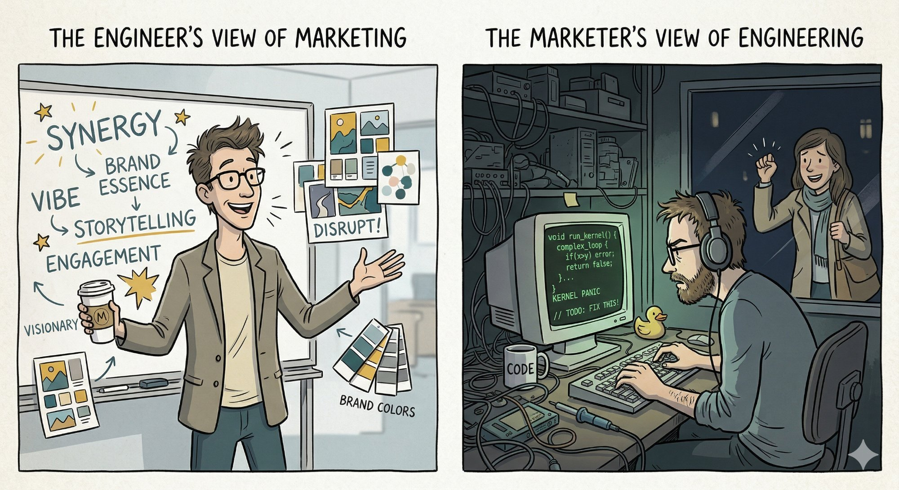
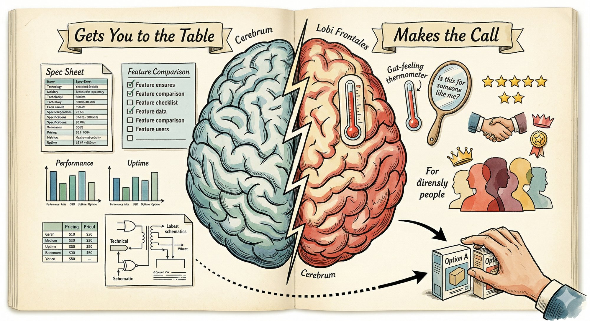

The conflict between marketing and engineering inside a modern tech company is so well known that it goes without mention. It is accepted as given, as a part of the environment, like the grass on the lawn.
But bridging this gap is more than an aesthetic concern — it's critical to the company's success. History is littered with products that were better ideas or better performers but were never adopted by the market. Betamax. Google+. The Wii U. Quibi. Numerous enterprise software products with better architecture than Salesforce. The list is long and instructive, and the pattern is always the same: a technically superior product lost to an inferior one because the inferior product understood its customer better, communicated more clearly, and built a stronger narrative around its value.

The cost of leaving the engineering-marketing divide in place is concrete. Companies ship products that work beautifully and go nowhere because nobody outside the building understands what they're for. Marketing teams burn budgets positioning things they were never consulted on building. Engineering teams rebuild features the market didn't want while the features it did want go unbuilt. Leaders spend political capital mediating turf wars that shouldn't exist. Real competitive advantage gets left on the table.
The reason this keeps happening isn't stubbornness or dysfunction. It's a genuine philosophical difference about the nature of reality — and once you see it clearly, the whole conflict starts to make a different kind of sense.
What engineers do is extraordinary, and it doesn't get said clearly enough outside of engineering circles.
The physical world is indifferent to human wishes. Gravity doesn't negotiate. Bits either flip or they don't. An engineer's job is to impose human intention onto a universe that has no interest in cooperating — and to do it reliably, at scale, often under conditions nobody fully anticipated.
This requires something genuinely rare: the willingness to be wrong in a verifiable way.
When an engineer writes code, the universe gives feedback. Not opinion. Not feeling. Feedback. The program runs or it crashes. The latency is 40ms or it's 400ms. The test passes or it fails. There is a ground truth, and the engineer's entire professional life is organized around closing the gap between their model of the world and what the world actually does.
That produces a cognitive culture of tremendous intellectual honesty. Engineers learn early that their intuitions are often wrong, that complexity hides in corners, that the system will surprise you. The best engineers develop an almost philosophical humility before complexity — because the system has taught them, repeatedly, that overconfidence is punished.
There's something deeply ethical about it, too. An engineer who certifies a bridge as safe is making a commitment to reality. The bridge will hold or it will not. There is no spin. No narrative that makes a failing beam load-bearing. Ground truth is the ultimate authority, and the engineer's integrity is measured by how faithfully they serve it.
For many engineers, this isn't just a professional disposition — it becomes a worldview. Reality is knowable. Problems have correct solutions. Rigor and evidence are how you find them. Everything else is noise.
That worldview built the modern world. It deserves deep respect.
Marketing people, on the other hand, are experts in something equally real but operating by completely different rules.
The philosopher Yuval Noah Harari drew a useful distinction between three layers of reality. Objective reality is what exists regardless of what anyone thinks — mountains, electrons, the speed of light. Subjective reality is what exists inside a single mind — your experience of pain, your private fear of failure. And intersubjective reality is what exists because a large number of people collectively believe in it and act as if it's true. Money. Laws. Nations. Brands. Reputation. Status.

The crucial thing about intersubjective reality: it is completely real in its effects, even though it exists only in shared human belief. The dollar in your wallet is worth something because millions of people agree it is. The moment enough of them stop believing that, it isn't. This isn't an illusion — it's a different category of fact, one that governs enormous portions of human life.
This is where marketers live.
A great marketer is an expert in intersubjective reality. They understand how meaning is socially constructed — how the same product, positioned differently, becomes a different thing in the minds of the people who encounter it. They understand that a brand is not a logo. It is a set of expectations, associations, and feelings that a community holds in common about what a company stands for. That brand is as real as anything. It affects behavior, drives decisions, commands price premiums, and survives individual product failures.
This isn't manipulation, any more than engineering is manipulation when it bends physical materials to human purposes. The marketer is bending social and psychological materials — attention, trust, narrative, identity — to create outcomes that serve both the company and the customer.
Consider what a genuinely great marketer actually does. They understand that people don't buy products — they buy better versions of themselves, or membership in a community they want to belong to, or relief from a fear that keeps them up at night. They translate the real capabilities of a product into the language of human desire, which is a completely different language than technical specification. They understand that attention is a scarce resource in a world drowning in information, and that earning it ethically means creating genuine value — entertainment, insight, surprise, beauty — in the act of communication itself. They understand that trust is built in layers over time, that every touchpoint a customer has with a brand is either a deposit into or a withdrawal from a relationship that can take years to build and seconds to destroy. They understand that culture is the operating system all human decisions run on, and that products which align with cultural currents move effortlessly while products that fight them struggle regardless of their technical merit.
This is sophisticated, difficult, consequential work. It requires deep empathy, broad cultural awareness, psychological insight, strategic thinking, and creative skill — often deployed simultaneously, under conditions of high ambiguity, with no clean feedback loops to tell you if you got it right.
The reason it doesn't look hard is that when it works, it looks obvious. That's the mark of mastery.
So given two groups of intelligent, rigorous, motivated professionals, why do they so often end up in opposing corners?
The answer is a deep and understandable — but ultimately mistaken — failure to recognize each other's domain.

Engineers tend to mistake intersubjective reality for unreality. When a marketer says "we need to own the concept of trust in this category," an engineer hears something vague and unverifiable. There's no unit test for trust. You can't grep for it. The claim can't be falsified the way engineering claims can. So in the engineering frame, it registers as soft — a guess dressed up in confident language. What the engineer is missing is that trust is a real thing with real causal power, and that managing how it is constructed and maintained in the minds of customers is a legitimate technical problem — just in a different domain. The fact that it doesn't yield to the tools of computer science doesn't make it imaginary. It means it requires different tools.
Marketers, meanwhile, sometimes fail to earn the respect they deserve. Part of this is a communication problem. Marketing's complexity is largely hidden — the seams don't show when it works — so marketers often don't explain their reasoning in terms that resonate with analytical colleagues. If you can't articulate why you chose one word over another beyond "it just feels right," you're going to lose credibility with people who want to see your work.
Part of it is the ubiquity problem. Marketing is so woven into everyday life — it's on the cereal box, it's in every app, it surrounds us from childhood — that it stops being visible as a discipline. Everyone feels like they understand it because they've consumed it all their lives. Nobody feels like they understand compiler optimization because they've used a word processor. This familiarity breeds a contempt that has nothing to do with the actual difficulty of the work. It's the same reason every sports fan thinks they could coach the team — proximity to the output creates an illusion of competence at producing it.
And part of it is historical. Many technology companies were founded by engineers who built products so genuinely innovative that they spread on their own in the early stages. This created a powerful mythology: the great product sells itself. What the mythology ignores is that the spread of those early products was often driven by deeply effective marketing — it was just so well-integrated that it didn't look like marketing. It looked like culture. And so needing marketing becomes a kind of narcissistic wound: an implicit admission that the product isn't self-evidently superior, that the work alone wasn't enough. For a culture organized around the belief that quality speaks for itself, that's an uncomfortable thing to sit with.
The deepest clash, though, is philosophical. Engineers operate in a world where ground truth is the ultimate arbiter. Debate all you want — eventually you run the experiment and the universe decides. This creates a default suspicion of claims that can't be tested and a default impatience with ambiguity. Marketers operate in a world where there is no experiment that settles things cleanly. Human attention, trust, and desire are not controlled variables. A campaign that worked brilliantly last year may fail today because the cultural context shifted. The feedback loops are long, noisy, and hard to interpret.
Neither approach is superior. They are suited to different terrains. The tragedy is that most technology companies are trying to navigate both terrains simultaneously — and they staff for only one.
A product that doesn't work cannot be saved by marketing. But a product that works can absolutely be killed by the absence of it.
The pattern behind that graveyard of failed products isn't a mystery once you understand how people actually make buying decisions. In most categories, the technical specifications get you to the consideration set — they're table stakes. Your product needs to work, needs to be reliable, needs to do what it claims. But that just earns you a seat at the table. The actual decision happens on different terrain entirely.

At the moment of commitment, the buyer isn't comparing spec sheets. They're running a different calculus, mostly without realizing it. Do I trust this company? Is this product for someone like me? Will I look smart for choosing this, or will I have to defend it? Does this feel right? These are not irrational questions. They are questions about trust, identity, belonging, status, and risk — and they are answered in the intersubjective layer that engineers tend to dismiss as soft. A buyer who chooses a technically inferior product because the company behind it feels more credible, more aligned with their values, more like something they want to be associated with, is not making a mistake. They're making a perfectly rational decision — just in a rationality that operates on social and emotional inputs rather than technical ones.
This is why the absence of marketing is so lethal. If no one at your company is an expert in the terrain where the actual decision happens, you've ceded the decisive moment to competitors who are. You've built the better product and then left the room right before the verdict.
It also explains why the narcissistic wound runs so deep. Engineers want to believe the spec sheet is what wins, because the spec sheet is what they built. Acknowledging that the decision happens elsewhere — that a buyer might choose a worse product because they felt better about the company behind it — is genuinely threatening to a worldview organized around the primacy of ground truth. But it is how the world works.
This isn't a metaphor. It's a causal chain. You can build the most efficient, elegant, technically sophisticated product in your category — and if the people who need it don't know it exists, can't understand what it does, don't trust the company behind it, and don't see themselves as the kind of person who uses it, they will never buy it. The engineering work will have been done for no one.
Conversely, marketing without a genuinely good product is just the acceleration of failure. You reach more people faster with something that doesn't deliver — which means more disappointed customers, more negative word-of-mouth, a faster collapse of the reputation you spent money building. Nothing kills a bad product faster than good advertising. The old adage holds because it describes a real mechanism.
If you lead a technology company, you are almost certainly underinvesting in the relationship between these two functions. Here's what you can do about it.
Make intersubjective reality legible to your engineering culture. Most engineers have never encountered the concept as a formal idea. Introduce it. Run a session, bring in a speaker, assign a reading. The goal isn't to convert engineers into marketers — it's to give them a framework for understanding that their marketing colleagues are operating in a real domain, with real constraints, that requires real expertise. Just not the expertise they have. When engineers understand that brand, trust, and customer perception are causal forces with measurable effects on company outcomes, their respect for the function tends to increase naturally.
Require marketing to speak in evidence. This cuts the other direction. Marketing teams operating in ambiguous environments often develop a habit of defending decisions with aesthetic judgment or intuition alone. That's not sufficient in a data-capable organization. Push your marketing leaders to quantify their reasoning wherever possible — not because everything reduces to a number, but because the discipline of trying forces clarity of thinking and builds credibility with analytical colleagues. Attribution models, brand tracking studies, customer research, competitive positioning frameworks — these are the engineering drawings of the marketing world.
Integrate, don't silo. The most destructive organizational pattern in tech is: engineering builds the product, then throws it over the wall to marketing to "position." This produces bad positioning, because marketers who weren't involved in building the product don't understand it deeply enough to represent it accurately. And it produces bad products, because engineers who don't hear customer feedback directly lose touch with what the market actually needs. Embed marketing thinking early in the product development process. Have marketing leaders in roadmap conversations. Have engineers attend customer research sessions. A product that can't be explained clearly probably isn't clearly conceived.
Give marketing enough status to push back. In most technology companies, when engineering priorities conflict with marketing needs, engineering wins by default. This is partly organizational — engineers are more senior, better paid, closer to the CEO's background — and partly cultural. The result is that marketing is perpetually reactive, trying to represent products they had no hand in shaping, to customers whose input was never sought during development. Elevating marketing to genuine strategic partnership means giving marketing leaders a seat at the table where product decisions are made, and protecting their right to bring uncomfortable truths about customer perception into those rooms without being dismissed as obstacles.
Create shared language. A surprising amount of the friction is linguistic before it is substantive. Engineers and marketers use different vocabularies, operate on different time horizons, and measure success with different metrics. This creates misunderstanding that looks like disagreement. Invest in a shared vocabulary across functions. What does "positioning" mean in concrete terms? What does "technical debt" mean in customer impact terms? Cross-functional glossaries, joint retrospectives, and shared metrics dashboards all reduce the translation overhead that burns energy and generates unnecessary conflict.
Celebrate the integrated wins. When a product launch succeeds because engineering built something genuinely excellent and marketing communicated it compellingly and the two teams worked together — celebrate both contributions, explicitly and publicly, from the top. Culture is built by what leadership pays attention to and what it rewards. If every successful launch is attributed to product and engineering, and marketing is invisible in the victory narrative, you are teaching your organization that marketing doesn't matter. That becomes self-fulfilling.
The best technology companies are not the ones with the best engineers or the best marketers. They are the ones that understand, at a deep level, that they are operating simultaneously in two kinds of reality — and that they need masters of both.
Ground truth reality is where the product is built. Where the code runs or crashes. Where the physics are non-negotiable and the feedback is honest.
Intersubjective reality is where the product finds its place in the world. Where customers decide whether to trust you, where reputation is constructed or destroyed, where a brand becomes something larger than any individual product.
Neither group should condescend to the other. The engineer who dismisses marketing as fluff is like a carpenter who dismisses architecture — the craft is not sufficient without the vision of how it serves human life. The marketer who dismisses engineering as mere execution is building castles of meaning with no foundation under them.
Two worlds. One product. The leaders who understand that are building something that lasts.